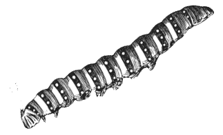
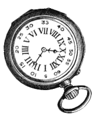
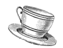
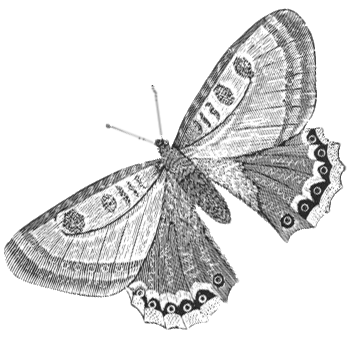
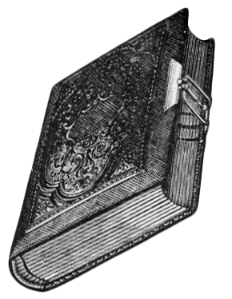
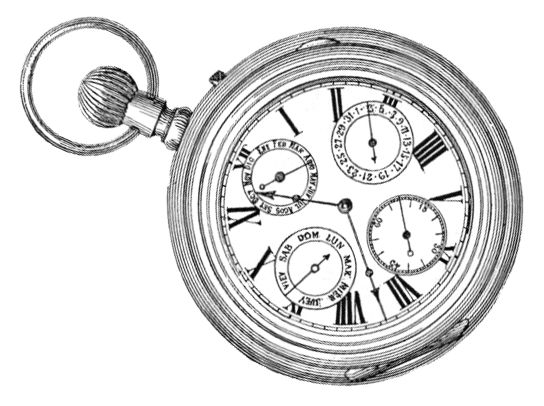

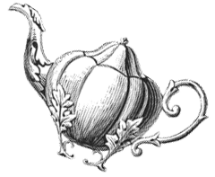
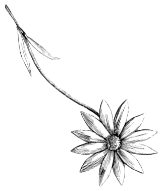

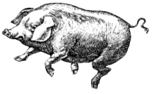
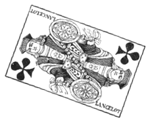
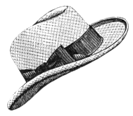
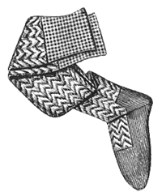
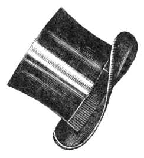
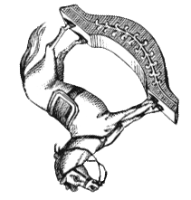
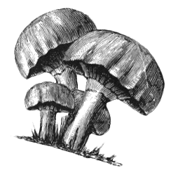
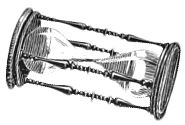
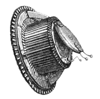
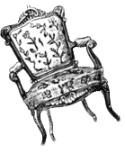
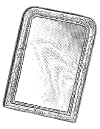
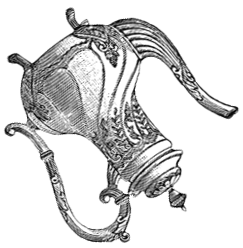
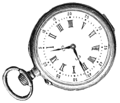
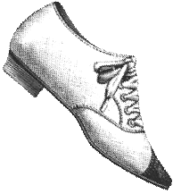
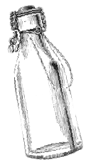
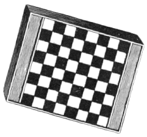
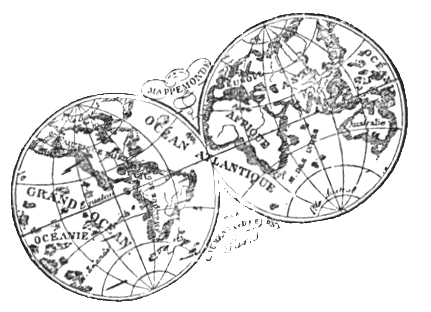
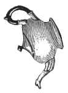
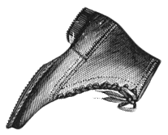
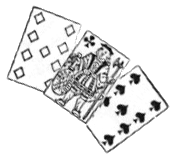
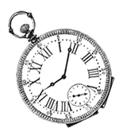
In another moment down went Alice after it, never once considering how in the world she was to get out again.
The rabbit-hole dipped suddenly down, so suddenly that Alice had not a moment to think about stopping herself before she found herself falling down a very deep well. Either the well was very deep, or she fell very slowly, for she had plenty of time as she went down to look about her and to wonder what was going to happen next.
First, she tried to look down and make out what she was coming to, but it was too dark to see anything; then she looked at the sides of the well, and noticed that they were filled with cupboards and book-shelves; here and there she saw maps and pictures hung upon pegs.
She took down a jar from one of the shelves as she passed; it was labelled ‘ORANGE MARMALADE’, but to her great disappointment it was empty: she did not like to drop the jar for fear of killing somebody, so managed to put it into one of the cupboards as she fell past it.
Down, down, down. Would the fall NEVER come to an end! ‘I wonder if I shall fall right THROUGH the earth! How funny it’ll seem to come out among the people that walk with their heads downward! The Antipathies, I think—’ (she was rather glad there WAS no one listening, this time, as it didn’t sound at all the right word) ‘—but I shall have to ask them what the name of the country is, you know. Please, Ma’am, is this New Zealand or Australia?’
Down, down, down. There was nothing else to do, so Alice soon began talking again. ‘Dinah’ll miss me very much to-night, I should think!’ (Dinah was the cat.) ‘I hope they’ll remember her saucer of milk at tea-time. Dinah my dear! I wish you were down here with me! There are no mice in the air, I’m afraid, but you might catch a bat, and that's very like a mouse, you know. But do cats eat bats, I wonder?’ And here Alice began to get rather sleepy, and went on saying to herself, in a dreamy sort of way, ‘Do cats eat bats? Do cats eat bats?’ and sometimes, ‘Do bats eat cats?’ for, you see, as she couldn’t answer either question, it didn’t much matter which way she put it. She felt that she was dozing off, and had just begun to dream that she was walking hand in hand with Dinah, and saying to her very earnestly, ‘Now, Dinah, tell me the truth: did you ever eat a bat?’ when suddenly—
THUMP! THUMP! Down she came upon a heap of sticks and dry leaves, and the fall was over.